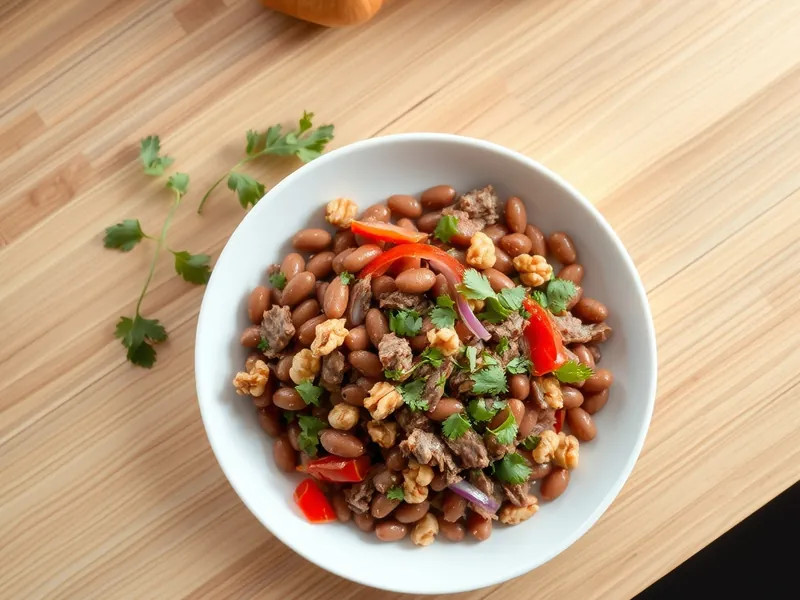

Фото: Иллюстрация ИИ, Cloudflare Workers AI
Салат «Тбилиси» с фасолью и говядиной
Острый грузинский салат из красной фасоли, отварной говядины, перца и грецких орехов
20 мин4 порц.465 ккал на порциюБ 29 · Ж 29 · У 24Кавказская кухня
Продукты на 4 порц.
- Фасоль консервированная1 шт
- Мясо отварное (осталось)300 г
- Перец болгарский1 шт
- Лук репчатый1 шт
- Грецкие орехи50 г
- Кинза1 пучок
- Чеснок2 зуб.
- Перец чили0,5 шт
- Растительное масло2 ст. л.
- Уксус 9%2 ч. л.
- Хмели-сунели1 ч. л.
- Соль0,5 ч. л.
Как готовить
- Нарежьте лук тонкими полукольцами, залейте водой с уксусом на 10 минут, затем отожмите.
- Слейте жидкость с фасоли и промойте её. Нарежьте говядину и перец соломкой.
- Подсушите орехи на сухой сковороде на среднем огне 2-3 минуты до аромата и крупно порубите.
- Смешайте масло, давленый чеснок, мелко нарезанный чили, хмели-сунели и соль.
- Соедините фасоль, мясо, перец, лук, орехи и рубленую кинзу, полейте заправкой и перемешайте. Дайте постоять 5 минут.
Совет. Отличный способ пустить в дело мясо из бульона. Салат хранится сутки в холодильнике и становится только вкуснее.